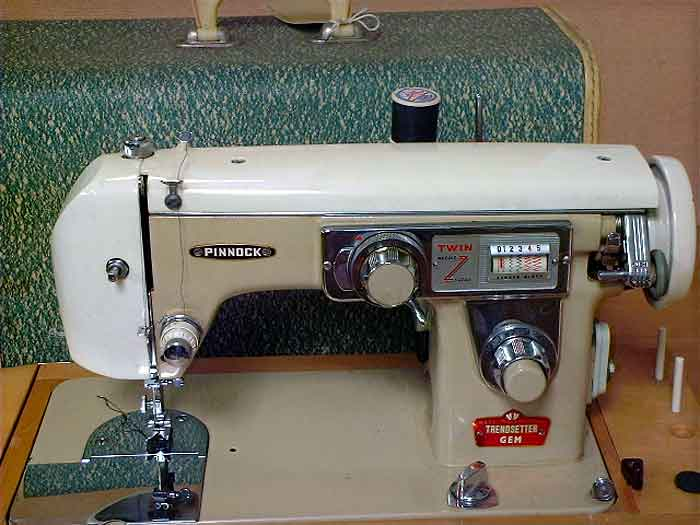

The NeedleBar
Pinnock
Adelaide, S. Australia
Model:
Trendsetter Gem
(twin-needle zig-zag)
Picture courtesy of Claire Sherwell

This page may not be reproduced
or distributed in part or in whole without the prior written permission of
the copyright owner